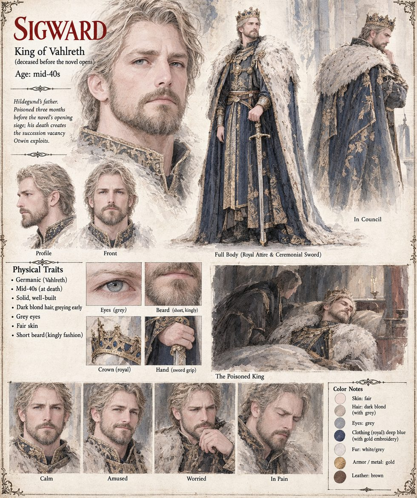

Sigward
King of Vahlreth, dead three months when the story opens · Hildegund's father · poisoned so cleanly every faction read the report as proof · mid-forties by his sheet
King of Vahlreth until he is poisoned, three months before the siege, so cleanly that the court physician's report, cautious, technical and entirely correct, is read afterwards by every faction as proof of whichever murder it has already decided to believe in. He is never seen on the page. What he leaves is a kingdom with forty quiet years behind it, a daughter of seventeen who is not yet anointed, and the Unbroken Blood, the law that voids any ducal claim for as long as a single drop of his line still breathes uncrowned, which makes the girl the one obstacle between Otwin and a throne the law itself has all but written his name into. On the night of the siege the bells of Vahlreth's own House of Vigil are still ringing the pattern kept for a king's death, because no one has told the boy on the rope that the king in question is three months buried.
The manuscript is careful about who set the cup. In Chapter Thirteen the poison in Hartenmark's wine comes from a supplier who had “served him faithfully twice before, once in a king's cup and once on a riverbank”, and in Chapter Twenty-Three Otwin's attempts begin with “a riverbank poisoner named Hagen”; the manuscript's own revision note says Hagen is established as Sigward's poisoner, and this page, like his, reads the chapters together. Years later his daughter sits across a plain table from the man who paid and says My father, and nothing after it. Otwin does not defend it and does not deny it, and she enters it in a ledger no one else will read as the one line the appointment will not close. Not the Sigward of Case 1268 (Sigward, a Triarch of the Threefold Crown), who is another man in another kingdom. The manuscript gives this king no appearance; the sheet's mid-forties, golden-blond hair and short beard, crown, blue-and-gold mantle with a fur collar and sword are its own.